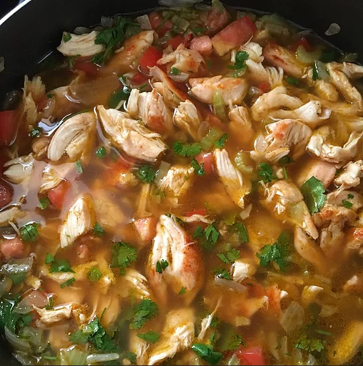

Chicken Soup

My friend's Abuelita's Mexican Chicken soup
This is the best way to make your body alive again after a drinking contest last night with youself.
Because you have problems, Richard. Get your shit together
Ingredientes
Disclaimer: some of these ingredients are not 100% necessary
- 1 ¼pounds skinless, boneless chicken breast halves
- 2 tablespoons taco seasoning mix
- 1 tablespoon vegetable oil
- ½ cup chopped onions
- ½ cup chopped celery
- 2 teaspoons ground cumin
- ¼ teaspoon ground black pepper
- 1 cup water
- 3 (14 ounce) cans chicken broth
- 1 cup diced tomatoes
- 1 tablespoon chopped fresh cilantro
- 1 cup shredded Cheddar cheese
- 1 cup crushed tortilla chips
- 1 avocado - peeled, pitted and diced
Pasos
- Preheat oven to 350 degrees F (175 degrees C).
- Lay chicken breasts onto a baking sheet and sprinkle with 1 tablespoon taco seasoning mix.
- Bake for 30 to 35 minutes, cool and shred or cut into strips.
- While the chicken is cooking, heat oil in a stockpot and cook the onions and celery until soft.
- Stir in the water and chicken broth. Season with cumin, black pepper and remaining taco seasoning mix.
- Simmer for 30 minutes for the flavors to mingle.
- Add the tomatoes, cilantro and chicken, simmer for 5 more minutes.
Serve hot topped with avocado, shredded cheese and crushed tortilla chips.
Nutrition
Per Serving:
315 calories; protein 29.2g; carbohydrates 12.1g; fat 16.4g; cholesterol 79.6mg; sodium 1367.8mg.